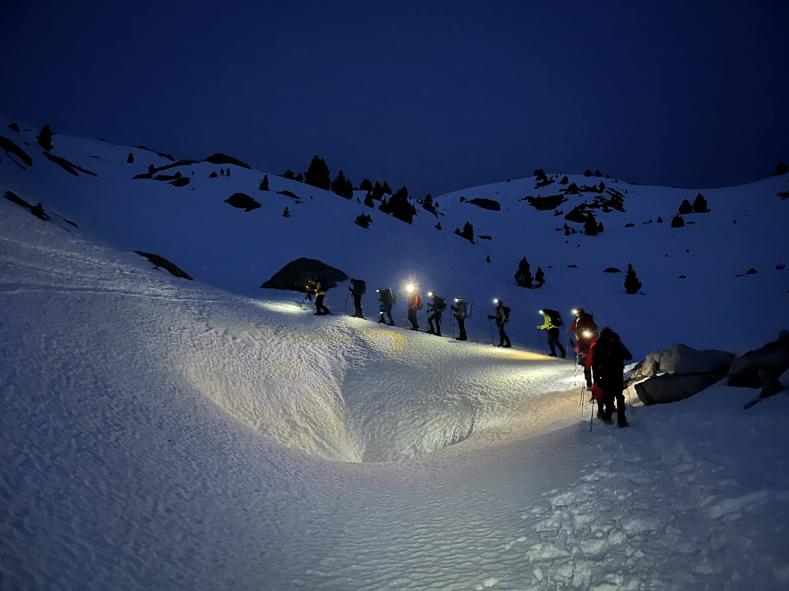

Bones!
Heu fet mai una llista de desitjos? O una llista de coses que us agradaria fer però que encara no heu fet? Això mateix és el que vaig fer fa cosa de mig any.
Aquí us deixo les sortides hivernals amb grampons que hem fet:
La meva primera hivernal!
2 de desembre de 2023. Som en Marc, la Júlia, en Guillem, el Martí, i jo. Quedem ben d'hora dissabte i ens dirigim a un poblet de França molt a prop d'Andorra: L'Hospitalet-près-l'Andorre. Per aquest cap de setmana sabem que farà fred i hem comprat carbó per fer foc al refugi lliure. Això augmenta el pes de la motxilla d'en Guillem.
Deixem el cotxe al parking de l'estació de tren. Fa fresqueta i està nevant. Ens equipem, carreguem les motxilles a l'esquena i ens posem a caminar. Creuem la carretera i de seguida ens endinsem al bosc. Un paisatge de fantasia, neva, però no passem gaire fred, amb una tèrmica i l'impermeable faig.
Recomano la lectura de la ressenya de referència, allà està tot ben explicat. Jo estic escrivint aquesta entrada al març, la memòria fa el que pot.
Comencem sense grampons ni polaines, el terra està moll però no nevat. A mesura que avancem i guanyem altura el paisatge es fa fent blanc, els tolls d'aigua comencen a estar congelats, i els marges del riu semblen barbes blanques de cristall, el terra ja és blanc, però no ens enfonsem. Arriba el moment de posar-se les polaines, no volem acabar amb els peus molls. Primer cop que em poso les polaines, i que sexi em sento!
Continuem avançant fins a un tram força dret, veiem un mur de formigó, la presa de l'estany de la Jaça del Forn. Voregem l'estany per la dreta. Quina meravella veure com canvia el paisatge, el llac no està completament gelat, però queden només algunes zones sense gel per sobre. Decidim parar per menjar alguna cosa amb aquestes vistes. Si Finlàndia tingués muntanya seria una cosa similar. Parem poqueta estona per no passar gaire fred, engolim els entrepans comprats a Puigcerdà i continuem.
La vall es va obrint i tenim rierols i herba coberta de neu. Fem alguns saltirons per no enfonsar els peus a l'aigua i ja veiem una cabanya. No és fins que hi estem davant que respirem tranquils, comprovem que podem obrir la porta i entrem a preparar la nostra caseta. Som al refugi lliure de La Vesine. Hi ha xemeneia, i un cordino per tancar millor la porta.
En Guillem proposa fer pràctiques d'autodetenció. Al principi ens fa mandra, però tenint en compte que l'endemà farem un pendent de 35° val la pena dominar l'autodetenció. Creuem la vall cap a l'esquerra, i saltem entre els rierols sense motxilles, però amb piolet. Detecta un pendent xulo on fer les pràctiques. Si no et pares, arribes al corriol, així que més val aprendre'n. Al principi em fa por, primer m'assec i em deixo lliscar. És només després d'unes quantes baixades que decideixo provar-ho estant dreta. M'està agradant, i vaig guanyant confiança amb la neu i el piolet. Coincideix amb la posta de sol, el cel s'està tenyint de rosa.
Respiro profundament apreciant la bellesa de la muntanya, i sabent com d'afortunats que som per gaudir d'aquests moments en plena solitud.
Començo a tenir fred i me'n torno al refu. Un cop hi som tots comencem a fer foc, gràcies, Guillem per haver carregat el carbó! Tenim en Martí com a home encarregat a fer el foc, mentrestant preparem el sopar, tenim un fogonet i sobres de sopa, tenim botifarres i carn, i més sopa, i com no, xocolata i ratafia. Sembla mentida, però hem estar unes 4 hores menjant. Abans d'anar a dormir sortim a veure les estrelles, a disfrutar del silenci i el fred que ens envoltava. I per últim omplir les ampolles d'aigua per no haver-ho de fer el matí següent.
El refugi té dos nivells de nit, com unes lliteres, però van de paret a paret. Així que a cada nivell hi caben unes 5 persones. Nosaltres decidim que és millor dormir a dalt, i tots ben juntets. És el primer cop que dormo en un refu lliure al desembre, la meto indica que aquesta nit serà freda, - 10 °C marca. Estreno sac també! Del Travessa, un de -10 °C d'un color blau molt maco. La tècnica per dormir és posar l'impermeable envoltant el sac pels peus, dormir amb poca roba, però amb tota la roba de l'endemà dins el sac perquè no es refredi més del que ho farà dins el sac, i posar també l'ampolla d'aigua dins el sac perquè no es congeli si dins el refu baixa la temperatura per sota zero.
3 de desembre 2023. Sona l'alarma ben d'hora, no he passat fred a la nit, però sortir del sac costa. Esmorzem unes galetones i tesito calentet. Recollim, fem les motxilles i cap a fora. Comencem amb polaines i grampons. Per la següent ja ho sé, però els grampons han de venir regulats de casa, sinó perdem temperatura intentant regular-los fora. Fem saltironets i moviments de braços i cames per guanyar calor, però al principi no noto els dits dels peus.
Agafem el ritme i comencen a sobrar peces de roba. Les vistes són precioses, les muntanyes de color taronja i bona companyia. En un punt ens separem, els nois van a fer el Pic de l'Alb, i la Júlia i jo ens dirigim cap a la Portella de Siscar, un coll ample, a l'esquerra tenim el Regalecio. Un cop superat el coll apareixen davant els nostres ulls unes vistes magnífiques, una vall àmplia i uns cims al fons que fan goig. Aquí decidim no fer el Pic de Nérassol, és la primera hivernal que fem i no necessitem fer cim, el terreny és mixt i no tenim clar si hauríem de treure'ns els grampons o no. Decidim començar a baixar per l'altra cara del coll, cap a la vall de la Valleta.
La tècnica de baixada és culenvagen. Anem jugant amb el piolet, la motxilla i intentant no fer gramponades a les cames. Dediquem part de la baixada a buscar pendents més pronunciades per tornar-les a pujar i baixar-les sense motxilla i controlant més l'autodetenció. Anem descendint la vall, un cop al sol fem una paradeta per menjar alguna cosa. Ens estem coneixent amb la Júlia, però ja detectem gran vincle.
Anem baixant la vall fins a trobar-nos amb l'estany de Pédourrés, aquí la Júlia i jo desfem i refem el camí, però acabem reenganxant-nos amb el sender marcat en blanc i vermell. Ja ens hem tret els grampons i ens replantegem si ens els hem tret massa d'hora.
Seguim baixant i arribem a la presa d'Arques, voregem l'embassament per l'esquerra. El camí està força mullat, i el trobem força gelat, anem amb compte per no relliscar, però no ens tornem a posar els grampons. Anem perdent altura, i ja veiem el poble d'Ospitalet. Arribem a la carretera N-20, la creuem i anem en busca d'un bar o cafeteria per esperar els nois. Fem una xocolata calenta al bar de l'estació de tren. I no molt després els veiem a l'altre costat de la via del tren.
Quin cap de setmana! Quin gaudir i quina felicitat.
Recomano molt aquesta ruta per aquelles persones que es vulguin iniciar en l'alpinisme i les sortides hivernals.
I repeteixo, aquesta és la meva crònica, per una ressenya detallada feu clic aquí.
I qualsevol comentari és benvingut, em podeu escriure a fancyfurgo@gmail.com si no tinc quadre de text encara, i ja veuré com ho puc afegir.
Quan sàpiga afegiré les fotos. Un petonàs!
La meva primera canal!
La meva primera canal tocha! Coronant el meu primer 3.000 hivernal.
Primera sortida que faig amb el grup de sèniors del CEC, l'organitza l'Emili i la Susana, els podeu trobar a instagram @trepitjamolses, al grup hi ha 2 sèniors més, i 12 del grup de joves. Deu ser la sortida de sèniors amb la mitjana d'edat més baixa que mai.
Dissabte 6 d'abril 2024.Quedem al pàrquing de Llanos del Hospital, la carretera de baix, ja que la de dalt està tancada, diria que la tanquen a l'hivern per risc d'allaus.
Comencem a caminar cap a les 12 del migdia, ens dirigim a la carretera de l'Hotel fins al trencall, aleshores agafem el camí de la dreta. Poc després ja hi ha neu, és una pista d'esquí de fons. Ens creuem amb alguns matiners que han fet skimo, dos d'ells instructors que vaig tenir al curs de l'ACNA!
Del pàrquing al refugi de La Renclusa passem per La Besurta. És una aproximació facileta, uns 300m de desnivell i 5km. Ens posem les raquetes a mig camí, quan decidim que hi ha prou neu com per fer incòmode l'aproximació amb les botes de muntanya. Se'm fa difícil caminar amb raquetes, ho trobo incòmode i em pesen més les cames que quan faig skimo. Més tard descobreixo que és perquè aixeco més del necessari les cames.
El refugi de La Renclusa és un dels més grans, conseqüència directa de ser un dels dos refugis principals per l'ascensió a l'Aneto. Sopem d'horeta i ens n'anem a dormir a les 10. L'endemà ens despertem a les 5am per sortir a les 6am.
Diumenge 7 d'abril 2024. Tota la ruta és cara Nord. Ens despertem al refugi de La Renclusa a les 5am, esmorzem i ens preparem. A les 6 i poc ja estem a fora calçant-nos les raquetes i fent el DVA check. Sortim a les 6.30am. Objectiu: La Maladeta.
Sortint del refugi prenem direcció la cresta de Portillón, després es situarà paral·lelament a la nostra esquerra. Els que fan l'Aneto i els que fem La Maladeta compartim camí fins aquí, atents al pas de Portillón, arribant a cota 3000m és on ens separem. Veiem el grup de davant que va cap a l'esquerra, nosaltres seguim recte. Ens dirigim a la canal de la Rimaya, que és per on pujarem. Abans, entrem a la glacera de La Maladeta. Cosa que anem qüestionant tot el camí de baixada perquè no sabem si és glacera, si és nevero, o si tan sols conserva gel tot l'any.
A la base de la canal deixem les raquetes i ens equipem amb grampons i piolet. Per pèrdua i recuperació d'un pal, un grup nombrós ens avança, això fa que ens hàgim d'esperar que pugin la canal just abans que nosaltres.
La canal de mitjana fa 45º, algun tram de 50º. Algunes ressenyes diuen que la canal fa 20m, d'altres que en fa 80. A Atesmaps surt que és terreny complex, i sumat amb el perill 3 d'allaus d'avui, això ens situa a "no recomanat". Tot i això, la fem. El tram de 50º fa impressió, però un cop superat, es nota que s'ha passat la pitjor part i la resta es fa més fàcil. Arribats al final de la canal, ens queden uns metres més per fer cim.
Fa força vent, ens aturem al costat d'unes grans roques per protegir-nos del vent i fer cim tots plegats, tot i que em fa l'efecte que no fem cim junts. Hem fet 7km en 1200m de desnivell positiu.
Ja és hora de tornar. Baixem pel mateix lloc que hem pujat. La canal la baixem de cara a la paret, igual que de pujada. Per mi es fa més difícil la baixada, fem servir els graons que hem deixat de pujada. De baixada la part més difícil és superar les roques del mig de la canal, un cop superades, fins a les raquetes hi ha poc tros i es pot fer de cara ja.
Ens tornem a posar les raquetes i ara és tot cap a baix, fins al cotxe ens esperen 1500m de desnivell negatiu, i molta molta neu. Primer cop que faig descens amb raquetes, com trobo a faltar els esquís, i que llarg que se'm fan els km fins al cotxe.
Reflexions de la sortida:
Moment d'exposar-me:
Ho he passat malament a la canal. És la primera canal que faig d'aquest nivell, on s'han de clavar les puntes de davant dels grampons, i al principi no tenia la tècnica clara, això m'ha fet sentir poc preparada. El piolet l'havia fet servir més per pràctica d'autodetencions que no pas per progressió, això ha fet que aprengués a la mateixa canal. Cosa que no hauria de ser així, m'he posat en perill a mi, i a la resta de companys. Mentalment, s'hi ha sumat que tenia la sensació de ser una canal molt exposada. En arribar a dalt he hiperventilat, una combinació de no creure'm que ho hagués aconseguit, i no entendre per què ho havia fet, sé que he seguit el grup sense plantejar-me els riscos.
A la baixada encara ho he passat pitjor. Per fer cada passa mirava cap a baix, estava tan bloquejada que necessitava la validació del Marc per posar cada peu, per sort el tenia ben a prop i m'anava tranquil·litzant i dient aquí un peu, aquí l'altre, em demostrava com de bé el piolet es clavava. De baixada he notat els graons més separats que de pujada, he hagut de balancejar més el meu cos, confiar en el piolet, fer molta força de braç, més per la tensió que no per ser necessari. Però he après molt. I ara que ja han passat uns dies estic molt satisfeta.
